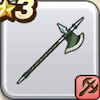

バトルアックス
攻略班 5.0点 / たいぼく斬
くわしい特徴
【レベル別習得スキル】 Lv1たいぼく斬（消費MP：5）植物系に威力160%それ以外の系統には130%の斬撃ダメージを与える Lv21けもの系へのダメージ+5% Lv30攻撃力+5 【限界突破スキル】 1凸スキルの斬撃・体技ダメージ+5% 2凸スキルの斬撃・体技ダメージ+5% 3凸スキルの斬撃・体技ダメージ+5% 4凸スキルの斬撃・体技ダメージ+5%

攻略班 5.0点 / たいぼく斬
【レベル別習得スキル】 Lv1たいぼく斬（消費MP：5）植物系に威力160%それ以外の系統には130%の斬撃ダメージを与える Lv21けもの系へのダメージ+5% Lv30攻撃力+5 【限界突破スキル】 1凸スキルの斬撃・体技ダメージ+5% 2凸スキルの斬撃・体技ダメージ+5% 3凸スキルの斬撃・体技ダメージ+5% 4凸スキルの斬撃・体技ダメージ+5%